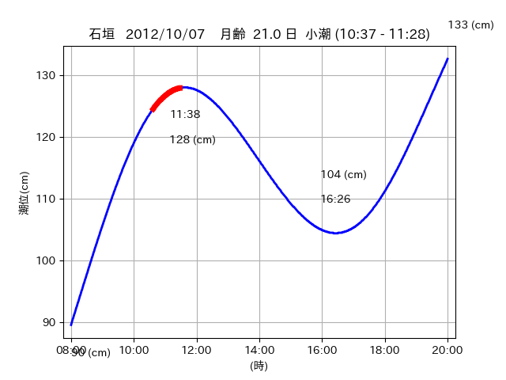
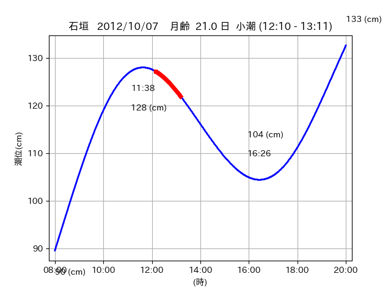
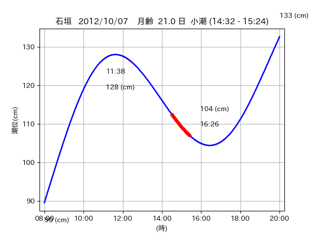

<!DOCTYPE html>
<html>
<head>
    
    <meta http-equiv="content-type" content="text/html; charset=UTF-8" />
    
        <script>
            L_NO_TOUCH = false;
            L_DISABLE_3D = false;
        </script>
    
    <style>html, body {width: 100%;height: 100%;margin: 0;padding: 0;}</style>
    <style>#map {position:absolute;top:0;bottom:0;right:0;left:0;}</style>
    <script src="https://cdn.jsdelivr.net/npm/leaflet@1.9.3/dist/leaflet.js"></script>
    <script src="https://code.jquery.com/jquery-3.7.1.min.js"></script>
    <script src="https://cdn.jsdelivr.net/npm/bootstrap@5.2.2/dist/js/bootstrap.bundle.min.js"></script>
    <script src="https://cdnjs.cloudflare.com/ajax/libs/Leaflet.awesome-markers/2.0.2/leaflet.awesome-markers.js"></script>
    <link rel="stylesheet" href="https://cdn.jsdelivr.net/npm/leaflet@1.9.3/dist/leaflet.css"/>
    <link rel="stylesheet" href="https://cdn.jsdelivr.net/npm/bootstrap@5.2.2/dist/css/bootstrap.min.css"/>
    <link rel="stylesheet" href="https://netdna.bootstrapcdn.com/bootstrap/3.0.0/css/bootstrap-glyphicons.css"/>
    <link rel="stylesheet" href="https://cdn.jsdelivr.net/npm/@fortawesome/fontawesome-free@6.2.0/css/all.min.css"/>
    <link rel="stylesheet" href="https://cdnjs.cloudflare.com/ajax/libs/Leaflet.awesome-markers/2.0.2/leaflet.awesome-markers.css"/>
    <link rel="stylesheet" href="https://cdn.jsdelivr.net/gh/python-visualization/folium/folium/templates/leaflet.awesome.rotate.min.css"/>
    
            <meta name="viewport" content="width=device-width,
                initial-scale=1.0, maximum-scale=1.0, user-scalable=no" />
            <style>
                #map_e4ffc69f4919e299347e952895313524 {
                    position: relative;
                    width: 2048.0px;
                    height: 1600.0px;
                    left: 0.0%;
                    top: 0.0%;
                }
                .leaflet-container { font-size: 1rem; }
            </style>
        
</head>
<body>
    
    
            <div class="folium-map" id="map_e4ffc69f4919e299347e952895313524" ></div>
        
</body>
<script>
    
    
            var map_e4ffc69f4919e299347e952895313524 = L.map(
                "map_e4ffc69f4919e299347e952895313524",
                {
                    center: [24.326, 124.193],
                    crs: L.CRS.EPSG3857,
                    ...{
  "zoom": 12,
  "zoomControl": true,
  "preferCanvas": false,
}

                }
            );

            

        
    
            var tile_layer_b06deca3968c8d034d157e69146d95a0 = L.tileLayer(
                "https://cyberjapandata.gsi.go.jp/xyz/seamlessphoto/{z}/{x}/{y}.jpg",
                {
  "minZoom": 0,
  "maxZoom": 18,
  "maxNativeZoom": 18,
  "noWrap": false,
  "attribution": "\u5730\u7406\u9662\u5730\u56f3",
  "subdomains": "abc",
  "detectRetina": false,
  "tms": false,
  "opacity": 1,
}

            );
        
    
            tile_layer_b06deca3968c8d034d157e69146d95a0.addTo(map_e4ffc69f4919e299347e952895313524);
        
    
            var marker_9d29e08fd0aaef788168f07c9a9ad333 = L.marker(
                [24.3364, 124.2325],
                {
}
            ).addTo(map_e4ffc69f4919e299347e952895313524);
        
    
            var icon_c6106645b6f9966eed6f02963e975bac = L.AwesomeMarkers.icon(
                {
  "markerColor": "orange",
  "iconColor": "white",
  "icon": "info-sign",
  "prefix": "glyphicon",
  "extraClasses": "fa-rotate-0",
}
            );
        
    
        var popup_b84813c23dbac86501f546d017af889c = L.popup({
  "maxWidth": "100%",
});

        
            
                var html_cdaa1a606415988ebd112966f7574e36 = $(`<div id="html_cdaa1a606415988ebd112966f7574e36" style="width: 100.0%; height: 100.0%;"><table><tr><td></td></tr><tr><td><center>20121007 No.1 </center></table></td></tr></table</div>`)[0];
                popup_b84813c23dbac86501f546d017af889c.setContent(html_cdaa1a606415988ebd112966f7574e36);
            
        

        marker_9d29e08fd0aaef788168f07c9a9ad333.bindPopup(popup_b84813c23dbac86501f546d017af889c)
        ;

        
    
    
                marker_9d29e08fd0aaef788168f07c9a9ad333.setIcon(icon_c6106645b6f9966eed6f02963e975bac);
            
    
            var poly_line_cfffedff8b19b8a06ae5ca58db9fa2d0 = L.polyline(
                [[24.3364, 124.2325], [24.335, 124.2416]],
                {"bubblingMouseEvents": true, "color": "#00FFFF", "dashArray": null, "dashOffset": null, "fill": false, "fillColor": "#00FFFF", "fillOpacity": 0.2, "fillRule": "evenodd", "lineCap": "round", "lineJoin": "round", "noClip": false, "opacity": 1.0, "smoothFactor": 1.0, "stroke": true, "weight": 3}
            ).addTo(map_e4ffc69f4919e299347e952895313524);
        
    
            var marker_7dbdca08f7dba5dde81f2681c418c89d = L.marker(
                [24.3408, 124.2175],
                {
}
            ).addTo(map_e4ffc69f4919e299347e952895313524);
        
    
            var icon_2fac7d40c858e1fb0eb7dda70879c9a9 = L.AwesomeMarkers.icon(
                {
  "markerColor": "orange",
  "iconColor": "white",
  "icon": "info-sign",
  "prefix": "glyphicon",
  "extraClasses": "fa-rotate-0",
}
            );
        
    
        var popup_198fd3bd1fdca98487d0e4174c961ac7 = L.popup({
  "maxWidth": "100%",
});

        
            
                var html_4c1e70ec8f520f85ad5fdc556ea91f9a = $(`<div id="html_4c1e70ec8f520f85ad5fdc556ea91f9a" style="width: 100.0%; height: 100.0%;"><table><tr><td></td></tr><tr><td><center>20121007 No.2 </center></table></td></tr></table</div>`)[0];
                popup_198fd3bd1fdca98487d0e4174c961ac7.setContent(html_4c1e70ec8f520f85ad5fdc556ea91f9a);
            
        

        marker_7dbdca08f7dba5dde81f2681c418c89d.bindPopup(popup_198fd3bd1fdca98487d0e4174c961ac7)
        ;

        
    
    
                marker_7dbdca08f7dba5dde81f2681c418c89d.setIcon(icon_2fac7d40c858e1fb0eb7dda70879c9a9);
            
    
            var poly_line_f3bd4e34df07cdd8df64666a4c86bbd3 = L.polyline(
                [[24.3408, 124.2175], [24.3362, 124.2232]],
                {"bubblingMouseEvents": true, "color": "#00FFFF", "dashArray": null, "dashOffset": null, "fill": false, "fillColor": "#00FFFF", "fillOpacity": 0.2, "fillRule": "evenodd", "lineCap": "round", "lineJoin": "round", "noClip": false, "opacity": 1.0, "smoothFactor": 1.0, "stroke": true, "weight": 3}
            ).addTo(map_e4ffc69f4919e299347e952895313524);
        
    
            var marker_5270c4daa510acae8c0c42c03319bd98 = L.marker(
                [24.3256, 124.1897],
                {
}
            ).addTo(map_e4ffc69f4919e299347e952895313524);
        
    
            var icon_e2d84fae34abac4c8ec611c2c171f1dd = L.AwesomeMarkers.icon(
                {
  "markerColor": "orange",
  "iconColor": "white",
  "icon": "info-sign",
  "prefix": "glyphicon",
  "extraClasses": "fa-rotate-0",
}
            );
        
    
        var popup_4c97e597c54779e83758e4cb97eeceb9 = L.popup({
  "maxWidth": "100%",
});

        
            
                var html_66c2c86591083c2a44950c67f4a35bed = $(`<div id="html_66c2c86591083c2a44950c67f4a35bed" style="width: 100.0%; height: 100.0%;"><table><tr><td></td></tr><tr><td><center>20121007 No.3 </center></table></td></tr></table</div>`)[0];
                popup_4c97e597c54779e83758e4cb97eeceb9.setContent(html_66c2c86591083c2a44950c67f4a35bed);
            
        

        marker_5270c4daa510acae8c0c42c03319bd98.bindPopup(popup_4c97e597c54779e83758e4cb97eeceb9)
        ;

        
    
    
                marker_5270c4daa510acae8c0c42c03319bd98.setIcon(icon_e2d84fae34abac4c8ec611c2c171f1dd);
            
    
            var poly_line_d5a9e7550e6fe61916bc569ab6f2eca7 = L.polyline(
                [[24.3256, 124.1897], [24.3264, 124.196]],
                {"bubblingMouseEvents": true, "color": "#FF00FF", "dashArray": null, "dashOffset": null, "fill": false, "fillColor": "#FF00FF", "fillOpacity": 0.2, "fillRule": "evenodd", "lineCap": "round", "lineJoin": "round", "noClip": false, "opacity": 1.0, "smoothFactor": 1.0, "stroke": true, "weight": 3}
            ).addTo(map_e4ffc69f4919e299347e952895313524);
        
</script>
</html>